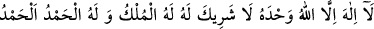

‘Ki o ateşten benim izzet ve şerefim yandı’
Nitekim Allah Teâlâ şöyle buyuruyor: “Kadının ailesinden birisi” Yani Züleyhâ’nın
dayısının henüz beşikte olan bebeği “böyle şahitlik etti,”
Allah Teâlâ Züleyhâ’nın ailesinden birine şahitlik ettirmiştir ki Züleyhâ aleyhinde
daha susturucu, Yûsuf’un suçsuzluğunu daha kesin ve güvenilir biçimde ortaya koyucu,
üzerindeki töhmeti daha kaldırıcı bir delil olsun.
el-İrşâd’da şöyle denilir: “Meydana gelen hâdiseyi beyan etmek için bu şâhidin
Züleyhâ’nın ailesinden olduğu belirtilmiştir. Çünkü bu şâhid onun ailesinden olsaydı da
olmasaydı da durum değişmeyecekti.”
Bilesin ki beşikteyken konuşan bir kaç kişi vardır:
1- Yûsuf (a.s.) lehine şahidlik eden bu bebek.
2- Peygamber Efendimiz (s.a.). Çünkü o doğumunun ilk günlerinde konuşmuştur:
Söylediği ilk söz de şunlar olmuştur:
“Allah, büyük te büyüktür. Allah’a çokça hamd olsun. Sabah akşam Allah
noksanlardan münezzehtir!”
3- İsa (a.s.). Onun beşikteyken söylediği sözler Meryem sûresinde (24-26; 30-33)
gelecektir.
4- İsa (a.s.)’ın annesi Meryem.
5- Yahya (a.s.).
6- İbrahim (a.s.). Çünkü İbrahim (a.s.) doğduğunda ayakları üzerinde dikilip şunları
söylemiştir:
“Allah’tan başka ilah yoktur. O tektir, ortağı yoktur, mülk O’nundur, hamd O’nadır.
Hamd, bizi buna hidâyet eden Allah’adır.”
7- Nuh (a.s.). O da doğumunun ardından hemen konuşmuştur. Annesi hem kendisi hem
de Nuh için endişe duyarak Nuh’u bir mağarada doğurmuş, sonra oradan ayrılmak
istediğinde ‘Ah benim Nuh’um!’ deyince Nuh (a.s.) anasını şöyle teselli etmiştir:
“Anneciğim, benim için kimseden endişelenme. Çünkü beni yaratan korur.”
8- Mûsa (a.s.). Annesi kendisini dünyaya getirince, doğrularak oturmuş ve Fir’avn’u
kastederek şöyle demiştir: “Anneciğim korkma. Çünkü Allah bizimle beraberdir.”
9- Yûsuf (a.s.) annesinin karnında konuşarak şöyle demiştir: “Ben uzun süre babamın